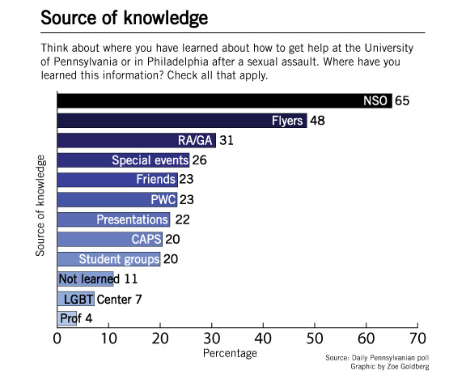
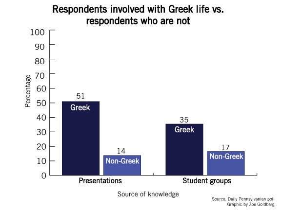

On the Saturday of New Student Orientation, Patricia Brennan directed a clear message at two distinct groups in the Class of 2017.
“I’m going to be talking to two small, very specific communities,” she said. “Those of you who are going to be victims and those of you who are going to be criminals.”
Brennan, the director of the Division of Public Safety’s Special Services — a unit that serves as an advocate for victims of crimes, including sexual violence — spoke to freshmen during the campus safety presentation at NSO.
She warned them that committing a rape could lead to severe consequences, including expulsion and a 20-year prison sentence. Emphasizing her role as a victim advocate, she told the assembly in Irvine Auditorium that she and her team “are there to get you through a crisis in any way we can.”
But according to a Daily Pennsylvanian poll, only 19 percent of undergraduates are aware that the University even has a rape victim advocate available.
Penn’s educational efforts, University administrators and staff say, are constantly evolving to keep up with the times. They work not only to find the best ways to educate students about resources, but to send a clear message: Sexual violence is not tolerated here.
But education about resources for victims can only go so far. Until students, staff and administrators address a culture that activists say trivializes sexual violence, it will be difficult, those activists say, for meaningful change to occur.
Educating new students
With its mandatory education efforts, the University aims to teach students early.
The annual presentation at NSO, timed at the beginning of freshmen’s weeklong introduction to Penn, serves as students’ first and main source of information about sexual assault on campus. Sixty-five percent of Penn undergraduates learned about sexual violence resources at NSO, according to the DP poll — by far students’ most common source of knowledge.
There’s a clear argument to push education during NSO. There’s a captive audience at a mandatory presentation. The timing is ripe for teaching: It’s right as freshmen get to campus, catching them before they get overtaken by parties that can create risky situations.
But freshmen have other things on their minds during NSO. Not only are they preoccupied with making friends, but they’re also being presented with a deluge of information. “It’s a lot to think about,” College junior Joanna Kamhi, chair of Abuse and Sexual Assault Prevention, a peer-education group, said.
Dylan Hewitt, College senior and vice president of education for sexual assault education group One in Four, said he wants to see a clearer message presented to freshmen at NSO.
“The fact that I can’t go back and say, ‘This is what I learned during NSO,’ should be quite alarming not only to University administrators, but to the student body, especially on topics like this,” he said.
Provost Vincent Price said that he and other administrators are constantly discussing ways to improve the sexual assault education for freshmen during their first days on campus. He also emphasized the importance of education throughout the school year.
“Students are bombarded with information, especially during New Student Orientation,” Price said. “The danger is focusing on New Student Orientation as the one place where you expend all of your energy on education, and that is simply an ineffective strategy. It is necessary, but not sufficient.”
One mandatory all-school refresher on sexual violence takes the form of a video and quiz emailed to all freshmen that reminds students of the link between sexual violence and alcohol and the definitions of assault. The program, run out of the Office of Alcohol and Other Drug Program Initiatives, is entering its second year. Those who join fraternities under the Interfraternity Council get another level of education: Each chapter is expected to send some of its new members to an annual event focused on sexual assault awareness. While sororities do not have as formalized a program, they partner with sexual assault awareness groups for educational events.
But despite these efforts, a portion of students still want Penn to be doing more by way of education. Thirty-two percent wanted more resources put toward education on how to help friends who have been sexually assaulted, according the DP poll. Nineteen percent of undergraduates want the University to allocate more resources to education on sexual assault throughout the school year. The same amount, 19 percent, wanted more education on how to report an assault to the Philadelphia Police Department.
While it is efficient to target freshmen in a large group during NSO, following up to reinforce the message in small groups is critical, student leaders say.
“I think the onus falls on people who see freshmen every day, week,” Hewitt said. “That can be the RA, or that can be a house dean.”
Cam, who said her assault contributed to her taking a leave of absence from Penn, said she doesn’t recall much education from Penn about sexual violence. She recounted the incident in a previous article in this series and asked that her name be changed like those of the other victims to protect her identity.
“I’m sure there would have been resources available to me had I wanted to use them, but I’m not aware of what they are off the top of my head,” Cam said. She never reported her assault to any authority figure, nor did she use a resource offered through Penn.
“We should be more aware of them.”


Changing the culture
In early September, a Penn fraternity was preparing for a sorority mixer.
The mixer was set to be Christmas-themed, according to internal listserv emails. The brothers were debating how to make the mixer as successful as possible.
“[M]istletoe,” one email suggested as a decoration idea. “[C]orny but could actually work once we start getting those hoes drunk.”
The email is not unique. A member of an off-campus fraternity that is not recognized by the University, for example, sent a message to its listserv encouraging the brothers to “quizzo until we jizzo all over any slut who’s too drunk to say no!”
If anyone followed through on the actions proposed in that email — initiating sexual contact with someone who was “too drunk to say no” — they would have been in violation of Penn’s Sexual Violence Policy.
The emails, which were obtained by the DP when the listservs were publicly viewable, speak to what activists and leaders say is a cultural problem that, while not unique to Penn, exists here nonetheless. The problem, they say, is best addressed through educating people to be conscious of cultural norms.
“It’s a matter of, ideally, more people taking classes like ‘Feminist Theory’ and educating themselves,” Melissa Sanchez, an English professor who studies feminist issues, said. “It’s a matter of opposing, being able to stand up to cultural assumptions.”
Not all societal problems are as overt as the listserv emails. Kamhi, the chair of Abuse and Sexual Assault Prevention, said that everyday expressions do their part to trivialize sexual violence.
“People will say, ‘This test raped me,’ when really that word is loaded,” she said. “That word has a specific meaning, and throwing words like that around only increases people’s level of comfortableness with the idea when really, it’s such an awful, awful thing.”
Brian, who said he was sexually assaulted by his former roommate in January — a story told in a previous article in this series — said he’s become more attuned to how students discuss sex since the incident. It bothers him, he said, when he hears people urging each other to “go bang her” and asking, “Did you score that?”
“Treating it as something that’s OK — you’re both drunk, it’s completely fine because you’re at college — it really upsets me,” he said.
Like other universities, Penn, activists say, has a unique ability to shape not only campus dialogue, but broader culture.
“They are communities — they can be communities free from violence,” said Carol Tracy, former Penn Women’s Center director and executive director of the Women’s Law Project. “They can be setting the standards.”
To begin to change the culture, activists believe there must be a forum for discussing the range of behaviors they say contributes to “rape culture.”
“We will never arrest our way out of these problems,” Tracy said. “We have to change the culture. And I’ve been seeing kind of the same dynamics for 40 years.”
Ruth, a Penn student who said she was raped almost a year ago, said Penn’s education “needs to be a lot better.”
Ruth, who told her story in a previous article in this series, said she was assaulted after going to a fraternity party and being walked home by a guy. She fell asleep and woke up with him on top of her. She’s only told her closest friends what happened.
While Ruth remembers the NSO presentations, she said she wants to see a stronger, more focused message from Penn during students’ first weeks about what the University does and does not tolerate. She said she wants to see a message that tells students “what’s not OK.”